2013/1128Thu青春八の字。521回目
しばらく落ち着きがないよー
あああー
最近食べ過ぎてる...
テストももうすぐだし
切り替え！！
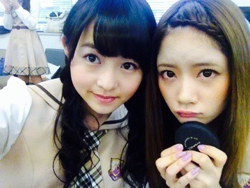
せいたんの爪が薄紫ー
11月27日
7thシングル「バレッタ」
の発売日です！
ぜひともよろしくお願いします。
個人pvが入ってるのはType-C。
湯浅弘章監督に
撮っていただきました！
病院が舞台のショートドラマです。
少女と少年のお話。
8歳年下の男の子が
無邪気で元気でとても癒された...
演技をまたやりたいなと
思っていたので本当に楽しかった♪
こういう雰囲気合ってる
って思ってくれたら嬉しいな。
スタッフのみなさん
キャストのみなさん
本当にありがとうございました！
伊藤万理華×湯浅弘章
『万理華』
ぜひ見てください！
バレッタの曲調とか
雰囲気とかだいすきなので
たくさんの方に聴いてほしいな。
ジャケ写の雰囲気も素敵です！
黄色がまたレトロでかわいい。
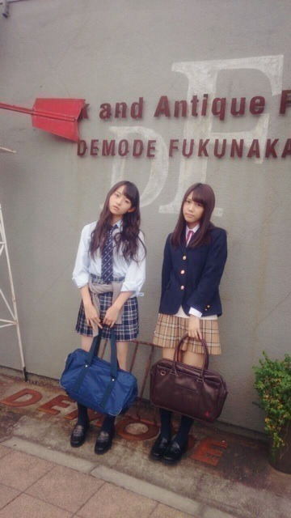
制服は4種類。
そんなバレッタがフルサイズが
配信スタートしています！
レコチョクでダウンロードしたら
プレゼントが当たるかも
要チェック
そして、昨日は
ベストアーティスト2013で
ガールズルールを歌いました！
メドレーの形で
出させていただきました。
見てくれたかな？
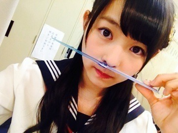
プロフィール写真が
冬仕様に変わりましたね。
アンニュイな感じですっ
勉強モードに入ります！
ああーがんばろ。
まりか
2013/1125Monジェリービーンズ眼 鏡。520回目
MUSIC FAIR
ミュージックドラゴン
チェックありがとうございました！
黒いふぁさふぁさした帽子
帽子だいすき。
また髪がだいぶ伸びたよ。
アイロンのせいか
毛先がどんどん茶色になってきてる。
染めてる？ってよく聞かれるけど
染めてないんだよね。
染めてみたい気持ちはあるけど、
染めたら元の色には戻れないって
聞くので染める勇気がない...
グリーンアッシュが入った
髪色にしてる人すきなんだよなー
最近はふわふわした
ウェーブ巻きがすきです。
夜寝る前に三つ編みして
貧乏パーマするのもはまってる。
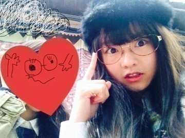
友達とランチしました。
眼鏡だし
シャツにニット
シャツにベストで
2人ともきっちり感があった笑
落ち着くぜー
今日一日興奮が収まらない...
お腹がうずうずしてます...
どうしましょう...
あーーーーしあ わ せ
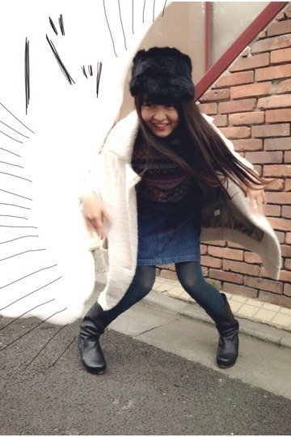
幸せの舞
まりか
2013/1123Sat逆転する。519回目
朝更新ー
最近先生が
授業日数のカウントダウンを
するようになって少し寂しい。
昨日は学校の行事で
ダンスの発表会がありました！
高校3年最後のイベント。
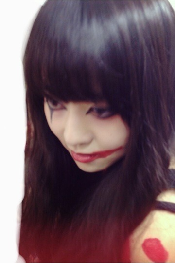
遅めのハロウィンみたいなメイク。
クラスメイトで集まって
朝練したり放課後練習したり...
こういうのって卒業したら
もうできないんだよね。
最優秀賞もらった！
本当に良い思い出...！
今のうちにJKいっぱい楽しまなきゃ。
そんなバカな・・・MV公開！
乃木坂ならぬ乃奇坂女子学院。
の、アイドル部員役です。
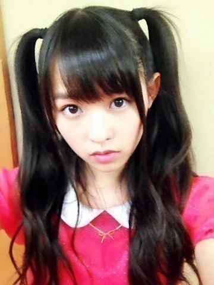
自慢のハーフツインくるくる////
こんな珍しい私を見れるのは
そんなバカな・・・MVだけ
ということで、
7thシングルのMVが
全部公開となりました！
ブログのタイトルがヒントでした。
髪にとめた。→バレッタ
自称手裏剣のプロ。→月の大きさ
心臓みたいな果実。→初恋の人を今でも
全力ウインク。
伝説の幽霊部員。→そんなバカな・・・
みんなわかったかなー
そんなバカな・・・でところどころ
まりっかが見当たらないだと？！
そんなバカな！！！！！！！(全力)
学業の為途中参加でした。
あー参加したかったなー
握手マシーントレーニングのシーンも
レスリングでダンスのシーンも
どんなに探してもいない。
悪しからず。
真面目な幽霊部員ということで。
撮影が異常に楽しかったです。
ジャージ姿で
歓迎するシーンはどれだけ
ウザくダサくキモく見せるか...
どんなにやっても生駒には負ける。
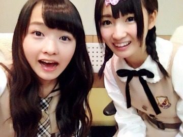
バーカな♪
７thシングル
『バレッタ』の着うた（Ｒ）配信！
レコチョクで特典プレゼント。
26日までです！
よろしくお願いします♪
それではお仕事がんばってきます！
まりか
2013/1118Monカカオ何パーセント ？518回目
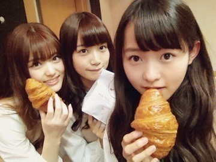
差し入れでいただいたクロワッサン。
さくさくですって
4thのヒット祈願で
みんなが頑張って滝行やってるの
テレビの前で見て
あぁーこんなの絶対辛いよな...
と他人事のように思ってた私がついに
滝行してまいりました！
神奈川の滝。
し！ろ！はったあげーたーーーー
普段ペットボトルのミルクティーは
あまり飲まないけど
滝行終わりにいただいた
ペットボトルのミルクティー(ホット)
を飲んだ時この世でいちばん美味しい
と感動しておりました。
健康祈願！
ボローーーーーーーーーン！！！！！
日曜日はお茶会サイン会でした。
お茶会は当たったファンの方5人と
私で神経衰弱という...
楽しめましたか？
どうしようかわからなくて
ずっと笑ってました！
あわわわーってなった。
サイン会はファンの方5人の私物に
サインをしゃしゃしゃーと。
それぞれの私物が個性的で...
嬉しかったなあ。
おしゃべりもたくさんできました^^
どちらともまったりと
楽しい時間を過ごせた。
ありがとうございました！いえーい
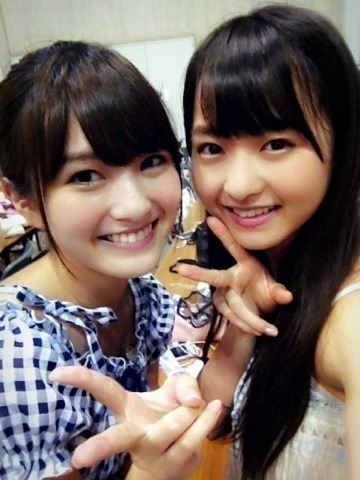
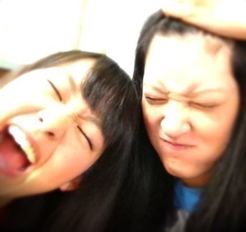
せっちゃん、ゆきな
寂しくないよ。
いつでも会えるから。
2人のこと応援してるよ！
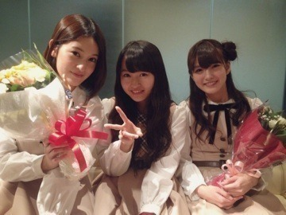
卒業おめでとう！
まりか
2013/1114Thuブザーが鳴る。517回目
せっちゃん、幸奈が
卒業することを発表しました。
せっちゃんは
夢に向かっての前向きな卒業。
見た目のクールなところから
想像がつかないくらい天然で
可愛いところ。
彼女は本当に魅力的です。
せっちゃん次への
ステップアップだね！
幸奈、仕事終わりに一緒に帰って
喋ること多かったんだ。
幸奈はすごく控えめで優しいけど、
ライブに出てパワフルにダンスを
踊ってる姿が印象的だった。
学業頑張ってたの知ってる。
その頑張ってる姿を見て
刺激をもらってました。
夢だったり目標を持つことって
素敵なことだなと改めて感じました。
私もがんばる！
一緒に活動できなくなるのは
寂しいけどメンバーであることに
変わりない！大切な仲間です。
ずっと応援してます。
卒業おめでとう！
17日、明るい気持ちで
2人のこと送り出したいな。
.........
朝起きたら鼻と耳と手足がひえひえ。
最近は外に出ると顔が寒いから
こうやって首回りを
ふわふわぐるんぐるんにします。
最近は歌収録をしました！
ばーれえったー
そして
7th特典の詳細が発表されました。
今回は個人PVです。
前作のまりっか'セブンのティーン
とは全く違った私。
本当に素敵な作品になっています！
本編はお楽しみに。
予告編が上がっていますので
是非観て下さい。
昨日は京都から遊びに来てる
おじいちゃんおばあちゃん
家族みんなでお食事。
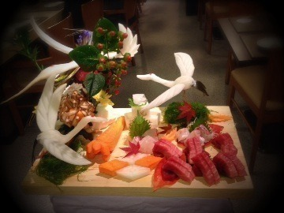
おばあちゃんのあるお祝いを...^^
素敵なお料理がたくさんでした。
初めてホオズキを食べたの。
秋の味覚。不思議な味。
美味しかった！
今、学校でダンスやってるの！
発表会があるのだけど、
3年生最後の行事になるから
気合入ってる！
照明等の構成考えなきゃ〜
おやすみなさい。
まりか